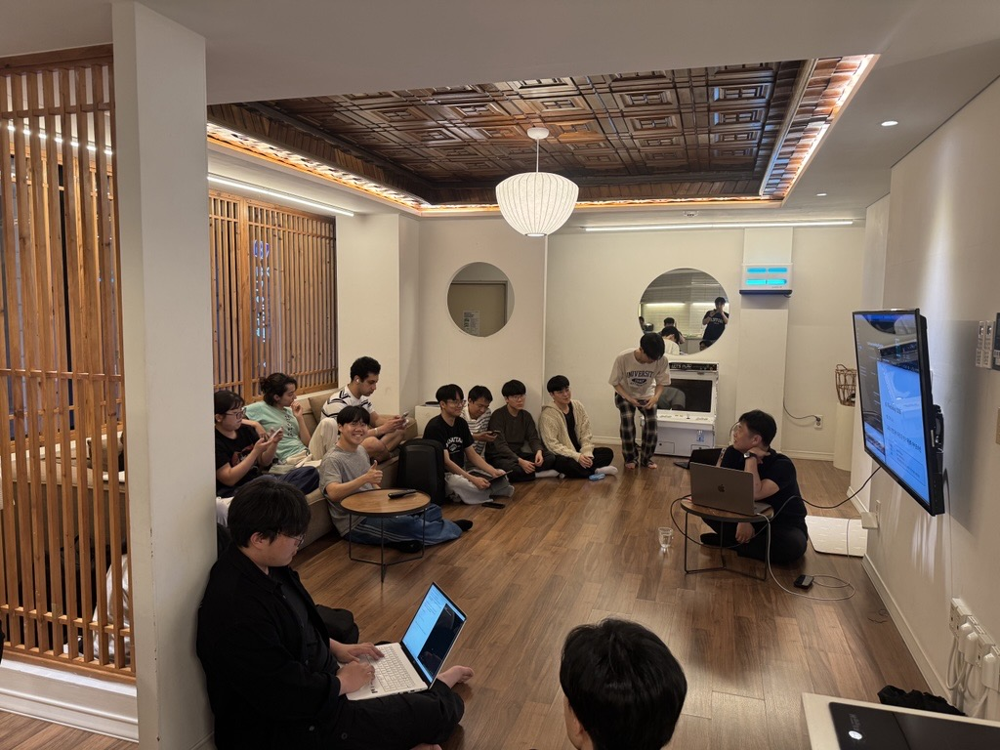
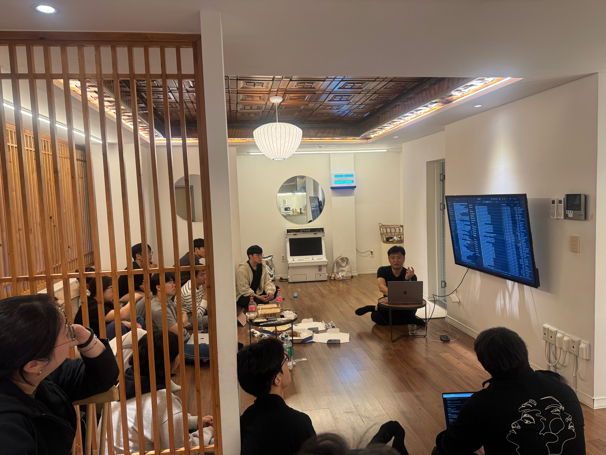
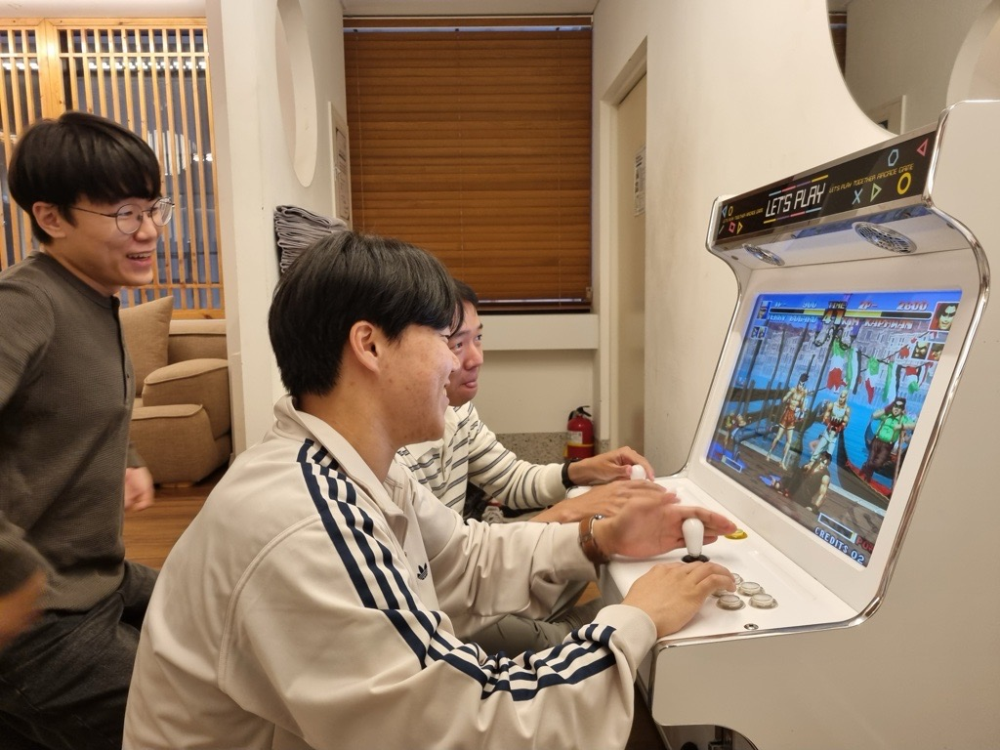
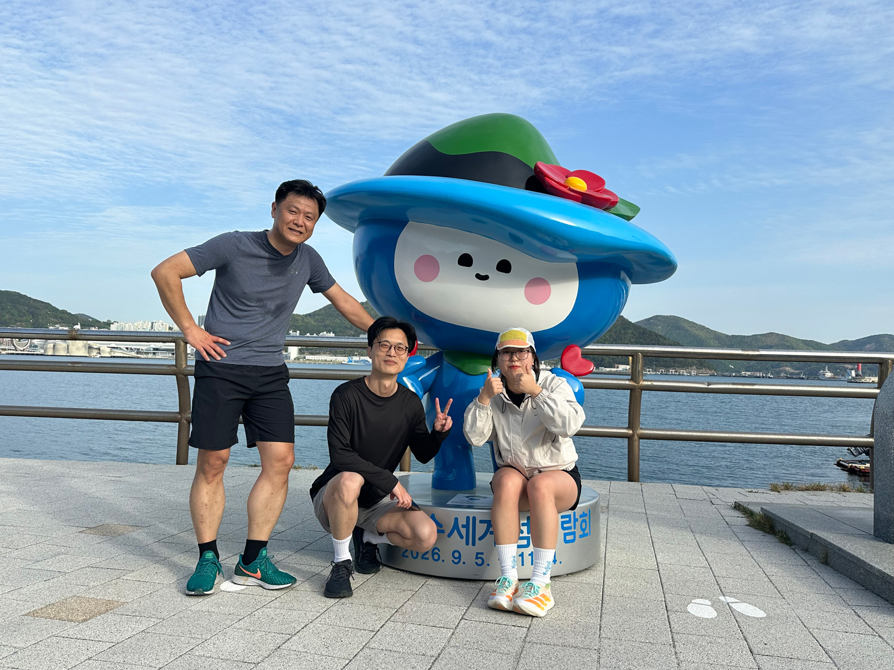
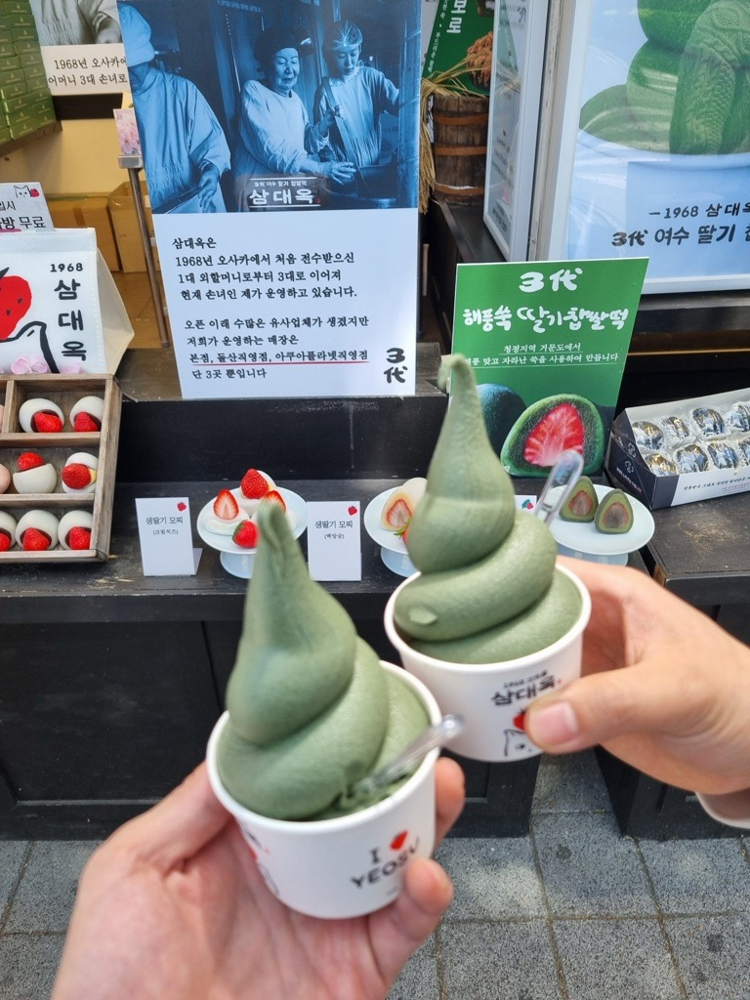

작성자: 양용승
날씨가 정말 좋았던 어느 날 (4/23~4/24), 연구실 사람들과 함께 여수에서 1박 2일 동안 AI 워크샵을 진행하게 되었습니다. 연구실 안에서만 지내다가 이렇게 바깥으로 나와 다 같이 시간을 보내니 괜히 더 설레고 기대가 되더라구요.


4월 23일 목요일 저녁 8시에 여수의 한 펜션에서 워크샵을 시작하였고, 교수님께서 50페이지가 넘는 자료를 직접 준비하셔서 강연을 해주셨습니다.
이번 워크샵은 단순한 AI 소개가 아니라, 실제로 연구에 활용할 수 있는 방법들을 중심으로 진행되었습니다.
LLM을 활용한 문서 작성, 연구 자동화, 그리고 워크플로우를 어떻게 구성해야 하는지까지 굉장히 실용적인 내용들이 많았습니다.
평소 막연하게만 생각했던 부분들이 조금 더 구체적으로 정리되는 느낌이었고, 특히 데이터베이스를 미리 구축해두는 것이 중요하다는 점을 느끼면서 그래서 더욱 도움이 되었던 시간이었습니다.
워크샵이 끝나니 밤 12시가 되었고, 중간에 맛있는 간식도 다같이 먹으면서 힘을 낼 수 있었습니다. 간식비는 교수님께서 내셨다고 합니다.

워크샵을 시작하기 전에 숙소에 먼저 도착했는데, 거기에 오락기 하나가 있더라구요. 자연스럽게 자신있는 사람들이 철권을 시작했고, 옆에서 구경하는 사람들까지 다 같이 몰입하면서 분위기가 굉장히 좋았습니다. 이런 순간들이 있어서 이번 워크샵이 더 기억에 남는 것 같아요.

다음날 아침에는 5km 러닝이 있었습니다. 교수님, 박사님, 그리고 지윤 누나까지 아침부터 열심히 뛰시는 모습이 인상적이었어요. 저는 직접 뛰지는 못했지만, 뛰고 난 뒤 찍은 사진을 보니 여수 바다를 보면서 달리는 러닝이라 그런지 다들 힘들어도 굉장히 상쾌해 보이더라구요. 아침부터 이렇게 움직이면 하루를 훨씬 더 알차게 시작할 수 있을 것 같다는 생각이 들었습니다.

여수에서 유명하다는 쑥 아이스크림도 먹어봤습니다. 다른 분들은 조금 텁텁하다고 하셨는데 저는 오히려 그 쌉싸름한 맛이 괜찮아서 맛있게 먹었습니다. ㅎㅎ 이것도 나중에 생각나면 또 먹고 싶을 것 같네요.
이번 여수 AI 워크샵은 단순한 강의 이상의 시간이었던 것 같습니다. 연구에 도움이 되는 내용도 많이 얻고, 연구실 사람들과 함께 좋은 시간도 보내고, 여수라는 장소에서의 여유까지 느낄 수 있었던 시간이었습니다. 짧은 일정이었지만 꽤 유익하고, 또 재밌게 잘 즐기고 온 워크샵이었습니다. 앞으로 이번에 배운 내용들을 연구에 잘 활용해보고 싶네요.
참가자 명단: 허필원, 이강우, 조권승, 류형석, 차명주, 문선웅, 성지윤, 박혜원, Thanh, 김민석, 배성환, 박제현, 김래헌, 박수영, 김민석, Mahta, Hesam, 양용승, 이한결, 김성환, 김채린